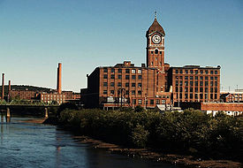

Homepage
Dominican Republic
Lawrence MA
My Puppy
Lawrence, MA

When i was really young my parents decided to move us to Lawrence, MA. Lawrence is what most people consider as the ghetto and was a rough placing growing up. There is a lot of hate that people have towards my city but it is one of the most amazing and talent filled city in the country. I will always represent and acknowledge that Lawrence is my city with pride because that is the place that molded me and allowed me to take the path I have today.